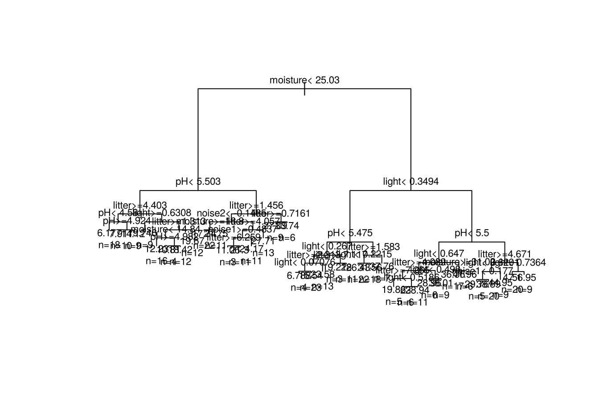
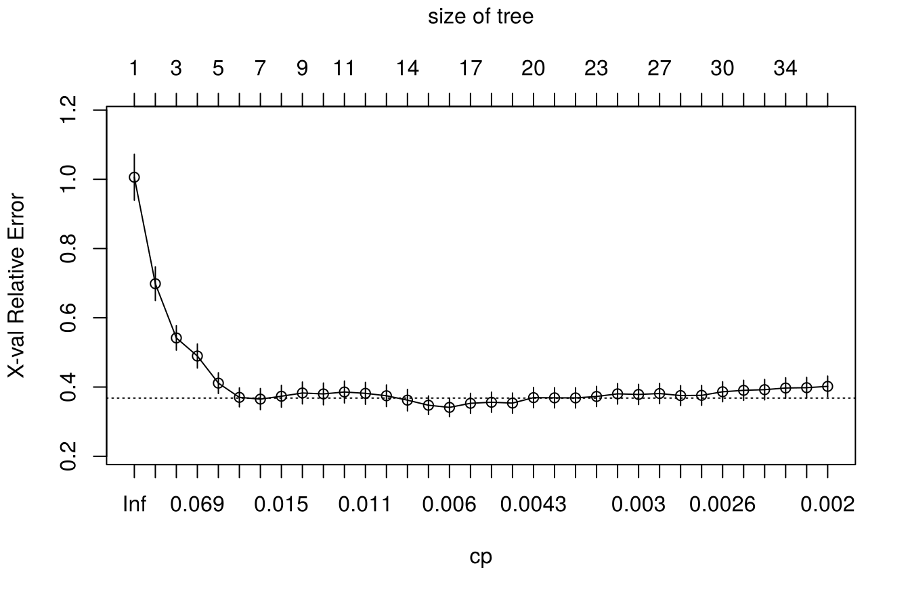
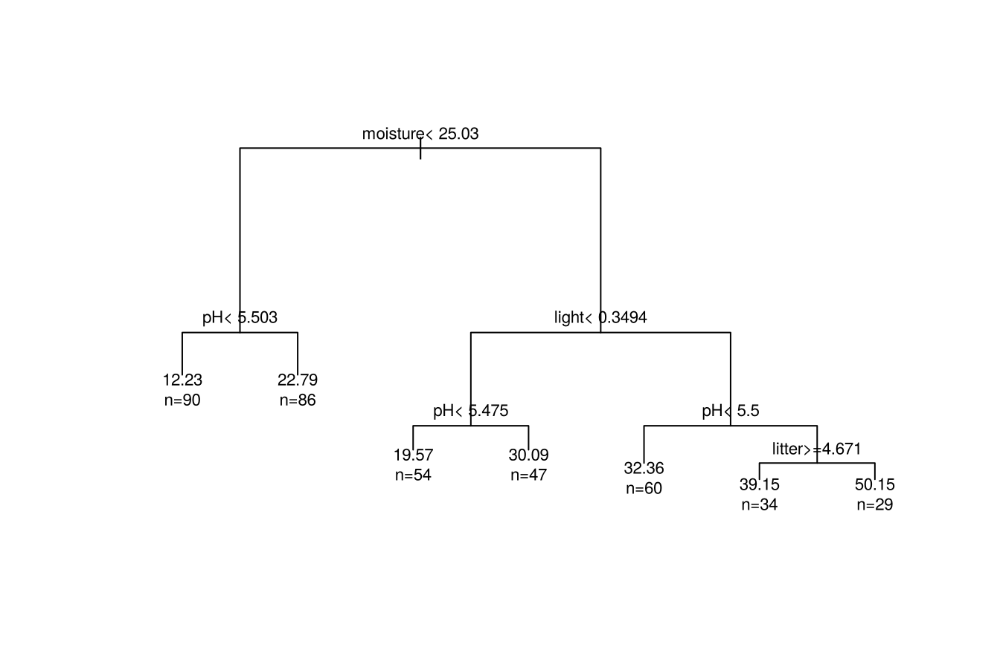
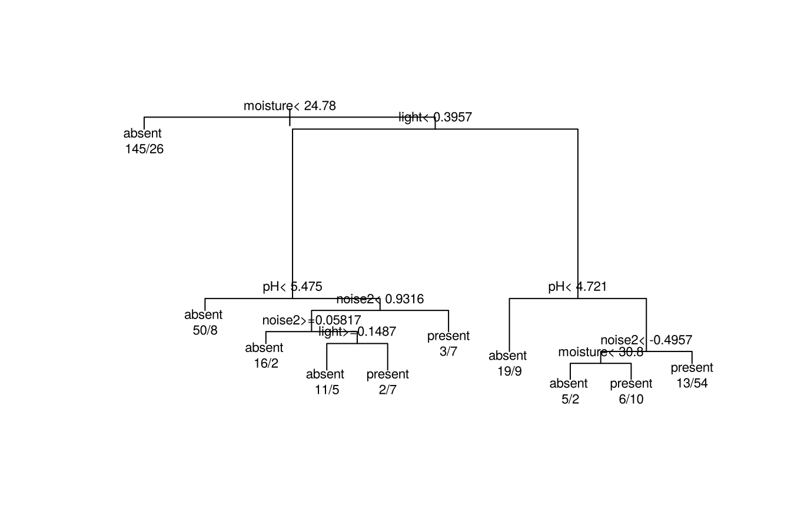
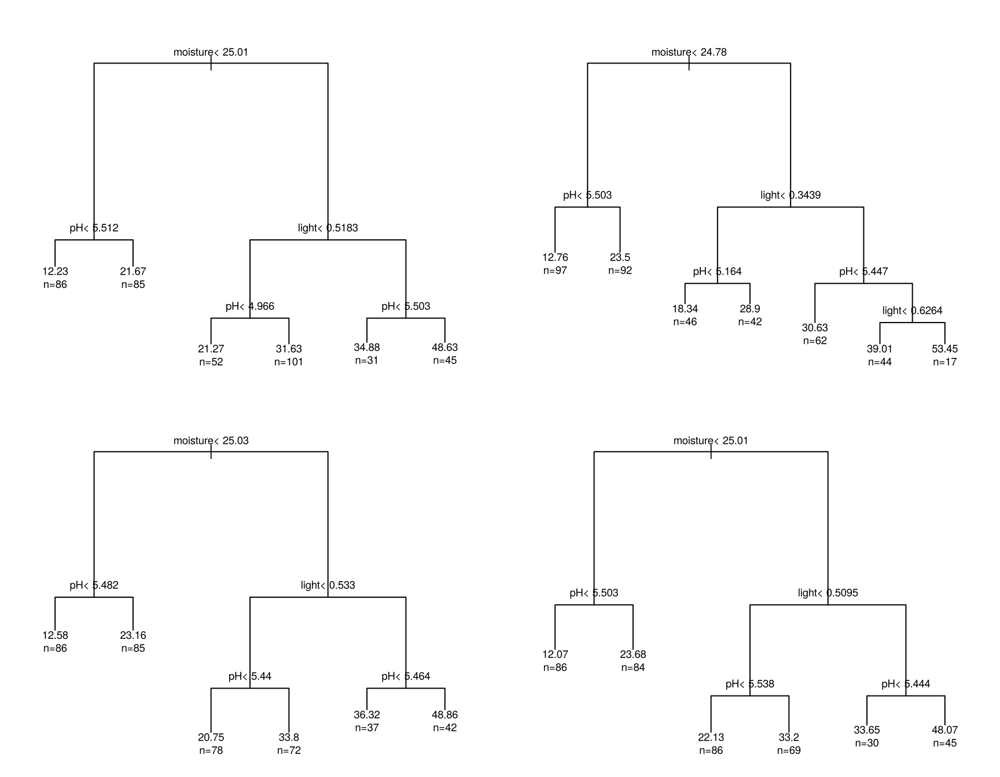
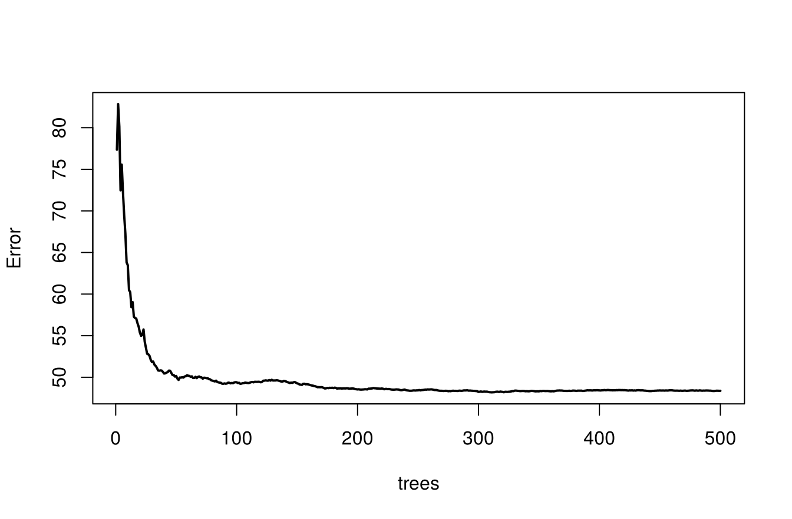
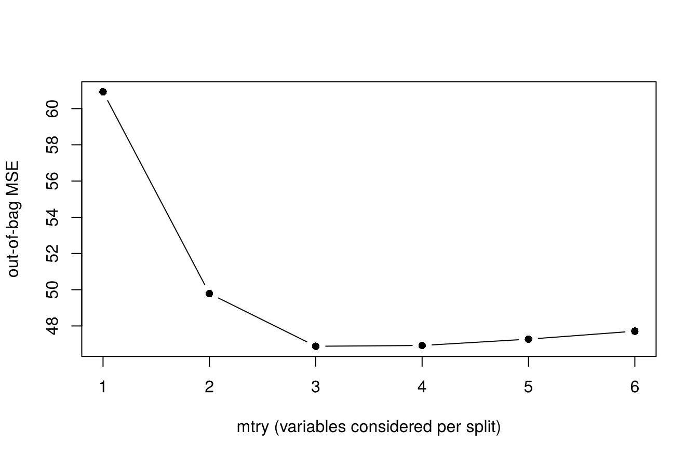
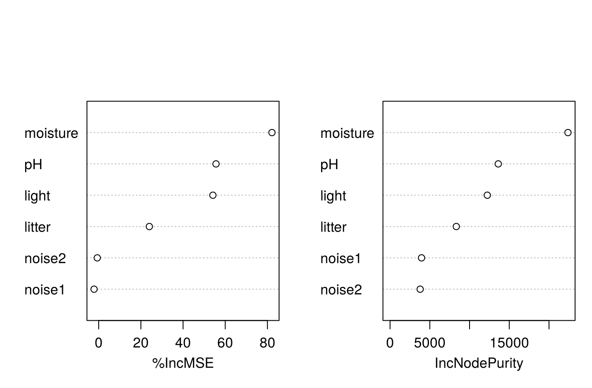
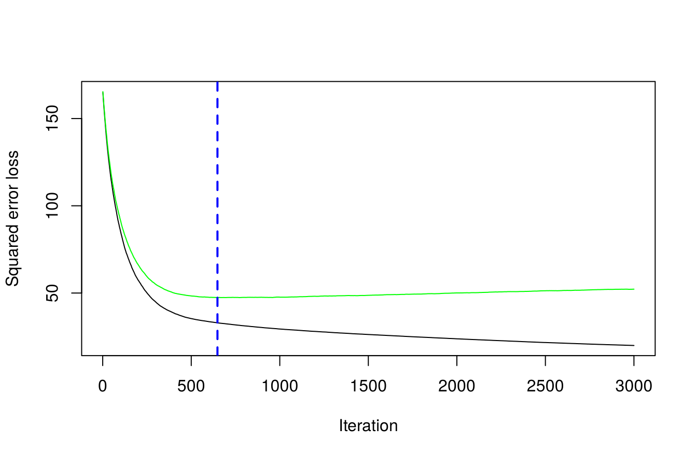

Day 7 delivered two tools and left them without an application that needed them. The bootstrap was demonstrated on a slope for which a formula already existed; cross-validation was demonstrated on a polynomial whose degree could almost have been chosen by eye. Both were introduced on models simple enough to check. This chapter is where they become load-bearing.
A regression tree has no coefficient table, no residual degrees of freedom, and no parameter count that measures its flexibility. The question of how large to grow it therefore cannot be answered by an information criterion in the routine way; it is answered by cross-validation. A single tree is also strikingly unstable: refit it on a resampled data set and it changes shape. That instability, which would ordinarily be a fatal defect, turns out to be the raw material for the most successful family of predictive methods in applied statistics — because the bootstrap can average it away.
KEY — Bagging is the bootstrap applied not to measure variance but to destroy it. Day 7 built the machine; this chapter puts it to work.
The arc runs from a single tree, through its weaknesses, to three distinct repairs. Bagging averages many trees grown on bootstrap resamples. Random forests improve on bagging by making the trees less alike. Boosting abandons averaging altogether and grows trees in sequence, each one correcting its predecessors. The three differ in what part of the error they attack, and that difference is the organising idea of the second half.
↪ ISLR Chapter 8 covers the same ground. A reading guide with figure and page numbers is given at the end of this chapter.
Explaining variance by splitting
The idea
Every method in the course so far has explained variation in a response by writing it as a function of the predictors: a line, a curve, a link function applied to a linear predictor. A tree does something different and cruder. It partitions the predictor space into rectangular regions and predicts a single constant within each one.
DEF — A regression tree partitions the predictor space into non-overlapping regions \(R_1, \dots, R_J\) and predicts, for any observation falling in \(R_j\), the mean of the training responses in that region.
The connection to the rest of the course is the variance partition of Day 1. A split is accepted when the combined within-group sum of squares of the two resulting subsets is smaller than that of the parent. This is the quantity that one-way ANOVA minimises when it assigns observations to known groups; the tree differs only in that it also chooses the groups.
↪ Day 1 partitioned total variance into a part explained by the model and a residual. A tree does the same, but searches for the partition rather than being handed it by the design.
A simulated forest-floor survey
We simulate a survey of understorey vegetation in 400 forest plots. The predictors are canopy openness, soil moisture, soil pH and litter depth, plus two variables that carry no signal at all and are included so that we can see what each method does with them.
set.seed(8)n <-400plots <-data.frame(light =runif(n, 0.02, 0.80), # canopy openness (proportion)moisture =runif(n, 10, 45), # soil moisture (%)pH =runif(n, 3.8, 7.2),litter =runif(n, 0, 8), # litter depth (cm)noise1 =runif(n, 0, 1), # no effectnoise2 =rnorm(n) # no effect)wet <- plots$moisture >=25mu <-18+35* plots$light * wet +# light helps only where moisture allows12* (plots$pH >5.5) +# a step, not a gradient-1.5* plots$litter # a genuine linear effectplots$cover <- mu +rnorm(n, 0, 6) # herb cover (%)summary(plots$cover)
#> Min. 1st Qu. Median Mean 3rd Qu. Max.
#> 0.3449 16.2407 24.4531 25.6474 34.5900 64.0183
The generating process is deliberately awkward for a linear model and comfortable for a tree. Canopy openness raises herb cover, but only in plots with at least 25% soil moisture: in dry plots extra light does nothing. Soil pH acts as a step at 5.5 rather than as a gradient. Litter depth alone enters linearly. The residual distribution has mean 0 and variance \(6^2 = 36\), which is the irreducible error that no method can beat.
KEY — Two of the three structures — an interaction and a threshold — are exactly what a rectangular partition represents naturally and an additive linear model represents badly.
The same plots also carry a binary response: presence of an indicator moss, generated from a logistic model driven by the same threshold structure. Because the true probability of presence is stored in p_true, we will later be able to compute the best performance any classifier could possibly achieve.
⚠p_true is in the data frame, so a formula written as moss ~ . would include the true probability as a predictor and produce a flawless classifier that has learned nothing. Every model below uses an explicit formula. Leakage of this kind is rarely so obvious in real data — an identifier correlated with treatment, or a variable measured after the outcome, does the same damage quietly.
The additive linear model recovers a positive light effect, a positive moisture effect and a negative litter effect. None of these is wrong, and none of them is the structure that generated the data. An additive model has no way to represent “light matters only when moisture exceeds 25%”; it can only report an average light effect taken across wet and dry plots, which is too small in the wet plots and too large in the dry ones. Nor can it represent a step: a linear pH term spreads a discontinuity at 5.5 across the whole pH range.
The remedy within the linear framework is to specify the interaction and the threshold explicitly. That requires knowing they are there. A tree searches for them.
Recursive binary splitting
The algorithm is a greedy search. At each node, every predictor and every candidate split point is considered; the split chosen is the one that most reduces the residual sum of squares,
and the procedure then repeats within each of the two children until a stopping rule intervenes.
DEF — The search is greedy because it takes the best split available now, without considering whether a worse split now would permit a better pair of splits later. The globally optimal tree is not found, and is not sought.
Two properties follow immediately from the algorithm and are worth stating before any code is run. Predictors are never transformed and never scaled, because only the order of a numeric predictor matters to a split point: any monotone transformation of a predictor leaves the tree unchanged. And interactions are represented without being specified, because a split made below another split applies only within that branch.
⚠ The converse of scale invariance is that a tree cannot extrapolate. Every prediction is an average of training observations, so predicted values are bounded by the range of the observed response. A tree fitted to plots with up to 60% cover will never predict 80%, whatever the predictors say.
Figure 12.1: Left: a rectangular partition of two predictors, with the mean response predicted in each region. Right: the same partition written as a tree. Reading the tree from the root downwards reproduces the splits from the outside inwards.
The two panels are the same object. The tree is a compact notation for a partition, and the partition is what the model actually is. Regions are rectangles with sides parallel to the axes, which is both the strength of the method — the shape is found automatically — and its limitation, since a diagonal boundary must be approximated by a staircase.
Each line of the printed output is a node. It gives the node number, the split that defines it, the number of observations reaching it, the deviance (the within-node sum of squares), and the predicted value, which for a regression tree is the node mean. An asterisk marks a terminal node, or leaf. The indentation records the hierarchy: node 2 and node 3 are the children of the root, nodes 4 and 5 the children of node 2.
draw_tree <-function(fit, ...) {if (requireNamespace("rpart.plot", quietly =TRUE)) { rpart.plot::rpart.plot(fit, ...) } else {plot(fit, margin =0.05)text(fit, use.n =TRUE, cex =0.7) }}draw_tree(tree_full, type =2, extra =101, tweak =0.9,box.palette ="Blues", main ="")

Each box reports the predicted cover, the number of plots reaching the node and that number as a percentage of the total. The first split should be inspected closely: the variable chosen there is the one that most reduces the total sum of squares, and in a well-behaved data set it is the dominant predictor. The first split is not always trustworthy, however — a single extreme observation can motivate a split that isolates it.
⚠ The tree grown here is deliberately too large: cp = 0.002 permits splits that improve the fit only slightly. It is the starting point for pruning, not a model to interpret.
The algorithm’s handling of the two noise predictors is worth checking in the printed tree. Because the search is greedy and exhaustive, a noise variable will occasionally produce the best split available in a small node purely by chance. This is not a malfunction; it is overfitting, and it is what pruning exists to remove.
The split search, from scratch
The search for the best split looks expensive: for every candidate cut-point, two means and two sums of squares. It is cheap, because of an identity. Splitting a node of \(n\) observations into a left part of \(n_L\) and a right part of \(n_R\) reduces the residual sum of squares by
This is the between-group sum of squares of Day 1 for two groups. The gain is large when the two means differ strongly and both parts are reasonably large; the factor \(n_Ln_R/n\) is what discourages splitting off a single extreme point. Only the two means are needed, and after sorting the predictor once they are available for every cut-point from a running sum.
best_split <-function(x, y) { o <-order(x); x <- x[o]; y <- y[o] n <-length(y) nL <-1:(n -1); nR <- n - nL # sizes for every possible cut sL <-cumsum(y)[nL]; sR <-sum(y) - sL # running sums give the two means gain <- nL * nR / n * (sL / nL - sR / nR)^2# reduction in RSS gain[x[nL] == x[nL +1]] <--Inf# cannot cut between equal values i <-which.max(gain)c(cut = (x[i] + x[i +1]) /2, gain = gain[i])}vars <-all.vars(f_reg)[-1]round(t(sapply(plots[vars], best_split, y = plots$cover)), 2)
Each row is the best cut for one predictor at the root. Moisture wins by a wide margin, at a cut-point next to the true threshold of 25, and the two noise variables offer the smallest gains. rpart made the same choice:
rpart reports the improvement as a fraction of the node’s sum of squares, which matches the gain computed by hand.
KEY — One node costs a sort per predictor: of the order of \(p\,n\log n\) operations. A whole tree costs roughly that times its depth. This is why trees, and forests of hundreds of trees, are feasible on large data.
Growing and pruning
Why the unpruned tree is a saturated model
Left alone, recursive splitting continues until every leaf holds a single observation. At that point the training residual sum of squares is zero and the tree reproduces the data exactly. Day 1 named this situation: a model with as many parameters as observations has no residual degrees of freedom, fits perfectly, and reveals nothing about the population.
KEY — A fully grown tree is the saturated model of Day 1 arrived at by a different route. The problem is the same and so is the diagnosis; only the remedy is new, because the flexibility of a tree cannot be counted in parameters.
The difficulty is that the number of leaves is not a usable parameter count. A tree with eight leaves has consumed far more than eight degrees of freedom, because the split points and split variables were themselves chosen by searching the data. There is no simple correction, which is why AIC is not the tool here.
Cost-complexity pruning
The standard approach grows a large tree deliberately and then removes branches, trading fit against size. For a tree \(T\) with \(|T|\) terminal nodes, define
\[
R_\alpha(T) = R(T) + \alpha \, |T|,
\]
where \(R(T)\) is the training error — the residual sum of squares for a regression tree — and \(\alpha \ge 0\) is the complexity parameter. For each value of \(\alpha\) there is a unique smallest subtree minimising \(R_\alpha\), and as \(\alpha\) increases the sequence of these subtrees is nested: branches are pruned away in a fixed order, never rearranged.
DEF — rpart reports a scaled version of \(\alpha\) called cp, expressed relative to the error of the root-only tree. A split is attempted only if it improves the relative error by at least cp.
Pruning backwards rather than stopping early matters. A split that appears weak can enable a highly informative split beneath it. In our simulation the split on moisture is useful in itself, but much of its value lies in the light split it makes possible in the wet branch. A rule that judged every split only by its immediate gain would undervalue that structure.
Choosing the complexity parameter by cross-validation
The table has one row per value of cp in the pruning sequence. rel error is the training error, which falls monotonically; xerror is the ten-fold cross-validated error, computed internally by rpart because xval = 10 was set; and xstd is its standard error across folds. The cross-validated column is the one to read. It falls and then rises, and the size of the tree at its minimum is the size supported by the data.
plotcp(tree_full)

The plot shows the same information: cross-validated relative error against tree size, with vertical bars giving one standard error either side. The dotted horizontal line sits one standard error above the minimum.
↪ This is the cross-validation of Day 7, run inside rpart rather than written out by hand. The folds are drawn on the training data, and the selected cp is a tuning parameter chosen in an inner loop.
Two defensible choices are shown. The first takes the cp with the lowest cross-validated error. The second applies the one-standard-error rule: among all trees whose cross-validated error lies within one standard error of the minimum, take the smallest. The rule acknowledges that the cross-validated errors are themselves estimates, so a difference smaller than their own uncertainty is not evidence of a better model, and prefers the simpler tree when the evidence does not distinguish them.
KEY — The one-standard-error rule is a general device, not a tree-specific one. It was introduced on Day 7 and also chose \(\lambda\) on Day 9.
tree_pruned <-prune(tree_full, cp = cp_1se)draw_tree(tree_pruned, type =2, extra =101, tweak =0.9,box.palette ="Blues", main ="")

The pruned tree should be compared against the generating process stated above. A split on moisture near 25, with a light split appearing only in the wet branch, is the interaction recovered without having been specified. A split on pH near 5.5 is the threshold recovered without having been specified. Litter, whose effect is linear and moderate, is approximated by whatever staircase the remaining splits can afford.
Classification trees
The same algorithm, a different criterion
For a categorical response the partition is built in exactly the same way, and only the quantity minimised changes. A leaf predicts the majority class among its training observations, and reports the class proportions alongside it.
Three measures of node impurity are in use. For a node \(m\) with class proportions \(\hat p_{mk}\):
Figure 12.2: The three node-impurity measures for a two-class node, as a function of the proportion of the first class. Cross-entropy is halved so that all three share the same maximum. The misclassification rate is piecewise linear and has zero gradient nowhere except at its peak.
The figure explains why trees are grown with Gini or entropy rather than with the error rate. All three are zero at a pure node and maximal at an even split, but the error rate is piecewise linear: splitting a node with proportions \((0.8, 0.2)\) into two children with proportions \((0.9, 0.1)\) and \((0.7, 0.3)\) leaves the total error rate unchanged, so the split appears worthless. Gini and entropy are strictly concave and reward the increase in purity. The error rate is nevertheless the right criterion for pruning, where predictive accuracy is the target.
The claim about the \((0.8, 0.2)\) node is easily checked. The split produces two children of equal size.
The printed output has one extra column compared with the regression case. After the node size comes the loss — the number of observations in the node not belonging to the predicted class — followed by the predicted class and the class probabilities in parentheses. A node reading 120 18 present (0.15 0.85) contains 120 plots of which 18 are not moss-present, and predicts presence with probability 0.85.
draw_tree(tree_cls, type =2, extra =104, tweak =0.9,box.palette ="BuGn", main ="")

extra = 104 displays the fitted class probabilities together with the percentage of observations at each node, which is the most informative layout for a classification tree: the predicted class alone conceals the difference between a leaf that is 51% present and one that is 98% present.
Pruning proceeds exactly as for the regression tree, using the cross-validated error column of the cptable. The frame component of a fitted rpart object records one row per node, with the splitting variable or the marker <leaf>, so counting leaves is a matter of counting that marker.
↪ A classification tree outputs a probability at each leaf. Day 8 showed how such scores are evaluated with confusion matrices and ROC curves. A pruned tree can output only as many distinct probabilities as it has leaves, so its ROC curve has few corners; averaging many trees removes that limitation.
A single tree is a weak learner
Instability
The defect that motivates everything in the rest of the chapter is easiest to see than to describe. We refit the tree on four bootstrap resamples of the same data.
DEF — A weak learner performs only slightly better than a trivial baseline: better than chance for classification, better than the intercept-only model for regression. Weakness is not a disqualification; it is the input to an ensemble.
set.seed(562)op <-par(mfrow =c(2, 2), mar =c(1, 1, 2, 1))for (b in1:4) { boot_rows <-sample(nrow(plots), replace =TRUE) tree_b <-rpart(f_reg, data = plots[boot_rows, ], method ="anova",control =rpart.control(cp =0.03))draw_tree(tree_b, type =2, extra =0, tweak =1.1,box.palette ="Blues", main =paste("resample", b))}

par(op)
The four trees are fitted to data sets that differ only through resampling, and yet they differ in which variable is split first, where the split points fall, and sometimes in which variables appear at all. The greedy search is the cause: once the root split changes, everything beneath it is fitted to different subsets, so a small perturbation near the top propagates into a completely different structure.
⚠ The instability is a property of the fitted structure, not necessarily of the predictions. Two visibly different trees may predict similarly. The consequence is that the interpretation of a single tree — “pH is the most important variable, and the cutoff is 5.5” — is far less reliable than it looks.
The variance problem, stated
In the language of the bias–variance decomposition, a deep tree has low bias and high variance. It can approximate almost any structure given enough splits, so it is not systematically wrong; but the particular structure it produces depends heavily on the particular sample, so it is unreliable.
High variance is the easier of the two problems to attack, because variance is reduced by averaging. If \(B\) independent estimates each have variance \(\sigma^2\), their mean has variance \(\sigma^2 / B\). The obstacle is that we have only one data set and therefore only one tree. That obstacle was removed on Day 7.
Bagging
Bootstrap aggregating
DEF — Bagging draws \(B\) bootstrap resamples of the training data, fits a deep unpruned tree to each, and averages their predictions (for regression) or takes a majority vote (for classification).
Two details of the recipe deserve attention. The individual trees are grown deep and unpruned: pruning would reduce their variance, but variance is what the averaging is for, and pruning would raise their bias, which averaging cannot repair. And \(B\) is not a tuning parameter. Increasing it can only reduce the variance of the ensemble, so it is set as large as the computing budget allows and never chosen by cross-validation.
↪ Day 7 established that a bootstrap resample omits about 37% of the rows. Those omitted rows are about to become useful.
Why the trees must differ
The averaging argument above assumed independence, which bootstrap resamples of one data set certainly are not: they share most of their rows. If the individual predictions have variance \(\sigma^2\) and pairwise correlation \(\rho\), the variance of their average is
The formula follows from the three lines that gave the design effect on Day 7. The variance of a sum is the sum of all variances and covariances. There are \(B\) variances \(\sigma^2\) and \(B(B-1)\) covariances \(\rho\sigma^2\), so
Figure 12.3: Variance of an ensemble average, relative to the variance of a single member, as the number of members grows. Each curve is a different pairwise correlation between members. The second term vanishes with B; the first does not.
The figure contains the entire argument for random forests. The second term falls away as \(B\) grows, but the first does not: the ensemble variance has a floor at \(\rho \sigma^2\), however many trees are grown. Adding trees beyond a few hundred is therefore pointless, and the only remaining way to improve the ensemble is to reduce the correlation between its members.
Correlation between bagged trees is high whenever one predictor dominates, because every resample will choose it for the root split and the trees will all share their most consequential decision.
Out-of-bag error
library(randomForest)set.seed(101)bag_fit <-randomForest(f_reg, data = plots, mtry =6, ntree =500,importance =TRUE)bag_fit
#>
#> Call:
#> randomForest(formula = f_reg, data = plots, mtry = 6, ntree = 500, importance = TRUE)
#> Type of random forest: regression
#> Number of trees: 500
#> No. of variables tried at each split: 6
#>
#> Mean of squared residuals: 48.37316
#> % Var explained: 70.95
Setting mtry equal to the number of predictors — all six here — means every split considers every variable, which is exactly bagging. randomForest is therefore used for both methods, with one argument distinguishing them.
The printed “Mean of squared residuals” is not a training error. It is the out-of-bag error: for each observation, the prediction is averaged over only those trees whose bootstrap sample excluded it, so every prediction is made by trees that never saw that observation. About a third of the ensemble contributes to each OOB prediction.
KEY — Out-of-bag error is cross-validation that costs nothing. It comes free with the resampling that bagging performs anyway, and for large \(B\) it is close to the leave-one-out cross-validated error.
plot(bag_fit, lwd =2, main ="")

The out-of-bag error is plotted against the number of trees. It falls steeply and then flattens, exactly as Figure 12.3 predicts: once the \((1-\rho)/B\) term has become negligible the curve reaches its floor, and further trees change nothing. The plot is the standard check that \(B\) was set large enough, and it answers that question rather than the question of which model is best.
What bagging costs
The ensemble no longer has a picture. There is no single tree to plot, no set of decision rules to quote, and no cutoff to report. Bagging buys accuracy with interpretability, and this is the point at which tree-based methods stop being an exploratory tool and become a predictive one.
Something interpretable can still be recovered, in the form of variable importance, which is developed in the next section because it matters equally for random forests.
Random forests
Decorrelating the trees
DEF — A random forest is bagging with one modification: at each split, only a random subset of \(m\) of the \(p\) predictors is considered as a candidate. A fresh subset is drawn at every split of every tree.
The modification looks perverse — the algorithm is forbidden from using the best variable at most splits — and it works for the reason Figure 12.3 makes visible. If a dominant predictor is unavailable at a given split, the tree is forced to use something else, so trees stop making the same decisions. The correlation \(\rho\) falls, the floor of the variance curve drops, and the ensemble improves even though every individual member has become slightly worse.
KEY — Random forests trade a small increase in the bias of each tree for a large reduction in the correlation between them. This is the only place in the course where deliberately weakening the components improves the whole.
Conventional defaults are \(m \approx \sqrt{p}\) for classification and \(m \approx p/3\) for regression. Unlike \(B\), \(m\) is a genuine tuning parameter and is worth cross-validating: small \(m\) gives maximal decorrelation and maximal individual bias, large \(m\) returns to bagging.
The two out-of-bag errors are directly comparable, since both are computed on the same data by the same mechanism, and both should be read against the irreducible error of 36 that no method can go below. The mse component of a fitted object holds the out-of-bag error after each tree, so its last element is the error of the full ensemble.
set.seed(103)mtry_grid <-1:6oob <-vapply(mtry_grid, function(m) { fit <-randomForest(f_reg, data = plots, mtry = m, ntree =300)tail(fit$mse, 1)}, numeric(1))plot(mtry_grid, oob, type ="b", pch =16,xlab ="mtry (variables considered per split)",ylab ="out-of-bag MSE")abline(h =36, lty =3, col ="firebrick")

Sweeping mtry from 1 to 6 traces the trade-off directly, with \(m = 6\) being bagging. The curve is usually shallow, which is the practical reason random forests have a reputation for working without tuning: the default is rarely far from optimal. The horizontal line marks the irreducible error.
Two measures are reported for regression forests. %IncMSE is a permutation measure: the values of one predictor are shuffled in the out-of-bag data, the increase in prediction error is recorded, and the result is averaged over trees. A variable that matters produces a large increase when scrambled. IncNodePurity accumulates the reduction in residual sum of squares attributable to splits on that variable, summed over the whole forest. For classification forests the second measure is the mean decrease in the Gini index instead.
varImpPlot(rf_fit, main ="")

The two panels need not agree, and the noise predictors provide the calibration: whatever score they receive is the score of a variable that is known to be irrelevant, so any predictor scoring near them has not been shown to matter.
⚠ Importance measures are unreliable under correlated predictors. Two nearly redundant variables split the credit between them and may both look unimportant, even when the pair is essential. Importance is a property of the variable in this ensemble, not a test of a biological effect.
⚠ The impurity-based measure is also biased towards variables with many possible split points: continuous predictors and factors with many levels score higher than binary predictors regardless of signal. The permutation measure is the safer of the two.
Boosting
Bagging and random forests start from deep trees and remove their variance by averaging. Boosting does the opposite: it starts from very small trees and removes their bias by accumulation. It uses the same simulated survey of understorey vegetation.
Sequential correction
Bagging and random forests fit their trees independently and in parallel; each one sees the data afresh. Boosting does the opposite. Trees are fitted in sequence, and each one is fitted to what the current ensemble is still getting wrong.
DEF — Boosting builds an additive model by repeatedly fitting a small tree to the current residuals and adding a shrunken version of it to the running prediction.
For regression with squared-error loss the algorithm is short enough to state in full. Set \(\hat f(x) = 0\) and \(r_i = y_i\). Then for \(b = 1, \dots, B\):
fit a tree \(\hat f^{\,b}\) with \(d\) splits to the current residuals \(r\);
update the residuals, \(r_i \leftarrow r_i - \lambda \hat f^{\,b}(x_i)\).
The output is \(\hat f(x) = \sum_{b=1}^{B} \lambda \hat f^{\,b}(x)\).
↪ This is ISLR Algorithm 8.2, page 347. For other loss functions the residual is replaced by the negative gradient of the loss, which is where the name gradient boosting comes from.
The learning is deliberately slow. Each tree is small, and only a fraction \(\lambda\) of it is added, so no single step commits the model to much. Fitting the residuals means that regions already predicted well contribute nothing further, and attention concentrates automatically where the ensemble is still failing.
Boosting is gradient descent in function space
Why fit the residuals? The answer connects boosting to the gradient descent of Appendix C. Suppose the aim is to minimise a loss summed over the training data,
\[
\sum_{i=1}^n L\big(y_i,\ f(x_i)\big),
\]
and regard the fitted values \(f(x_1), \dots, f(x_n)\) as the quantities to be adjusted. Gradient descent would move each of them a small step against its derivative:
For squared-error loss \(L = \tfrac12(y - f)^2\) the negative gradient is
\[
-g_i = y_i - f(x_i),
\]
the residual. The catch is that such a step is defined only at the training points and says nothing about a new \(x\). Boosting therefore fits a small tree to the negative gradients and steps along that tree instead. The tree generalises the step to the whole predictor space.
KEY — Each boosting round is one step of gradient descent, with a tree standing in for the gradient. The shrinkage \(\lambda\) is the step size.
The same recipe works for any differentiable loss, and only the “pseudo-residuals” change.
Loss
\(L(y, f)\)
Negative gradient \(-g_i\)
squared error
\(\tfrac12(y - f)^2\)
\(y_i - f(x_i)\)
absolute error
\(\lvert y - f\rvert\)
\(\operatorname{sign}\big(y_i - f(x_i)\big)\)
logistic (0/1 labels, \(f\) = log-odds)
\(-yf + \ln(1 + e^{f})\)
\(y_i - p_i\)
The last row is the gradient of the logistic log-likelihood of Day 6: a boosted classifier fits trees to \(y_i - p_i\).
Boosting from scratch
With rpart supplying the small trees, the algorithm is a loop of a few lines. One hundred plots are set aside to watch the error on data the model has not seen.
The training error falls with every round and passes below the irreducible error of 36, which no honest prediction can beat: from that point on the model is fitting noise. The error on the held-out plots reaches its minimum well before the last round and then creeps upward. This is the overfitting that the number of rounds must control, and the reason why that number has to be chosen on data not used for fitting.
⚠ The hundred held-out plots were used here to choose the number of rounds, so the minimum of the black curve is itself slightly optimistic (Day 7). The comparison at the end of this chapter keeps the two roles apart.
Three tuning parameters
Boosting has three parameters, and in contrast to bagging all three matter.
The number of trees\(B\) must be chosen, because boosting can overfit if it is too large. This is the sharpest contrast with random forests, where more trees are never harmful. Each additional boosting round makes the model more flexible; each additional forest member only averages away more variance.
The shrinkage\(\lambda\), typically 0.01 or 0.001, controls how much of each tree is taken. Smaller \(\lambda\) requires larger \(B\); the two trade off against each other and are usually chosen together.
The interaction depth\(d\) is the number of splits per tree. With \(d = 1\) each tree is a stump involving a single variable, and the boosted ensemble is then an additive model with no interactions at all. With \(d = 2\) pairwise interactions become representable, and so on: \(d\) is the interaction order of the fitted model, chosen rather than specified term by term.
KEY — In our simulation the generating process contains one two-way interaction, so \(d = 2\) is sufficient in principle and \(d = 1\) is not. Boosting makes the interaction order an explicit, tunable quantity.
library(gbm)set.seed(104)boost_fit <-gbm(f_reg, data = plots, distribution ="gaussian",n.trees =3000, interaction.depth =2,shrinkage =0.01, n.minobsinnode =10,cv.folds =5)best_iter <-gbm.perf(boost_fit, method ="cv")

best_iter
#> [1] 648
gbm.perf plots the training error, which falls monotonically, against the cross-validated error, which falls and then flattens or rises, and returns the number of iterations at the cross-validated minimum. The gap between the two curves is the optimism of the training error, and it widens with every additional round.
⚠ Predictions from a gbm object require the number of trees to be stated explicitly: predict(fit, newdata, n.trees = best_iter). Omitting it uses all n.trees, which discards the tuning just performed.
Relative influence is computed in the same spirit as impurity importance for forests: the improvement in squared error attributable to splits on each variable, summed over the ensemble and scaled to total 100. The noise predictors again serve as the reference level for irrelevance.
⚠gbm is no longer actively maintained. It remains the clearest implementation for teaching because it follows ISLR’s algorithm directly. For applied work, xgboost and lightgbm are the current standards, with the same three parameters under different names.
Bias, variance, and which method attacks which
The three ensembles are often presented as interchangeable alternatives. They are not, and the distinction is the single most useful thing to remember from this chapter.
Bagging
Random forest
Boosting
Attacks
variance
variance
bias
Base learners
deep, unpruned
deep, unpruned
shallow, often stumps
Fitted
in parallel, independently
in parallel, decorrelated
sequentially, dependently
Effect of large \(B\)
never harmful
never harmful
can overfit
Tuning needed
little
mtry
\(B\), \(\lambda\), \(d\) — all three
Built-in validation
out-of-bag
out-of-bag
none; use CV
Interpretability
low
low, plus importance
low, plus relative influence
Bagging and random forests start from a low-bias, high-variance learner and remove the variance by averaging. Boosting starts from a high-bias, low-variance learner — a stump is about as biased as a model can be — and removes the bias by accumulation. Reading the table row by row, almost every difference between the columns follows from that one difference in the first row.
↪ The bias–variance decomposition itself was derived on Day 9. These two chapters are its most direct application.
An honest comparison
Everything so far has been demonstrated on in-sample output or on out-of-bag error. The methods are now compared on equal terms, under one set of cross-validation folds, with all tuning performed inside the training data.
#> linear model pruned tree bagging random forest boosting
#> CV_MSE 79.01 58.18 52.13 51.69 45.72
#> SE 5.07 5.06 3.14 3.88 2.96
Three points about the design of this comparison matter more than the numbers it produces.
First, it is a nested cross-validation. The cp for the tree and the iteration count for the boosted model are selected by cross-validation within each training fold — rpart does this internally through xval, and gbm through cv.folds. The outer folds never participate in any choice, so the reported errors are honest estimates of the whole procedure.
↪ Day 7 argued for exactly this structure. The inner loops here are supplied by the fitting functions rather than written out, but they are the same construction.
Second, the standard errors across folds are reported alongside the means. With five folds these are crude, and differences smaller than a couple of standard errors should not be read as a ranking. The one-standard-error rule applies to method comparison just as it applied to tree size.
Third, every error should be read against the irreducible error of 36. A method achieving 45 has captured most of the available structure; the remaining gap to another method achieving 42 is a small fraction of what either has already explained. Improvements look larger than they are when the floor is forgotten.
⚠ If the plots had been nested within forest stands, every fold above would have to be grouped by stand. Ensembles are especially vulnerable to this leak: a deep tree can effectively memorise a stand, so random folds would report an error close to the within-stand residual variance and a forest would appear to outperform everything else for entirely spurious reasons.
Reading in ISLR
Chapter 8 of An Introduction to Statistical Learning (2nd edition) covers this material. The figures repay study in the order given.
Topic
ISLR
Figure
Page
A fitted regression tree, read as rules
§8.1.1
8.1
328
The same tree as a partition
§8.1.1
8.2
329
Valid and invalid partitions; the 3-D view
§8.1.1
8.3
332
Unpruned tree, and error against tree size
§8.1.1
8.4, 8.5
334–335
Classification tree with CV error
§8.1.2
8.6
336–337
Trees versus linear models
§8.1.3
8.7
338–339
Bagging and random forest test error
§8.2.1–2
8.8
342
Variable importance
§8.2.1
8.9
344
Effect of mtry
§8.2.2
8.10
346
Boosting depth and number of trees
§8.2.3
8.11
348
Lab code
§8.3
—
353–361
Two differences from the book are worth noting while reading. ISLR uses tree and randomForest; the course uses rpart, whose complexity parameter cp is a scaled version of the \(\alpha\) in ISLR’s equation (8.4), and whose cross-validation is performed automatically when the tree is grown. And §8.2.4 on Bayesian additive regression trees is not covered in the lectures; it is readable as extension material once boosting is understood, since BART is essentially a Bayesian treatment of the same additive-tree idea.
Where this leads
The methods of this chapter produce models that predict well and explain little. That is a genuine change in what a statistical model is for, and it is worth stating plainly. A fitted random forest supports the claim that herb cover can be predicted from these four variables to within a certain error. It does not support a claim about the effect of raising soil pH by one unit, and no amount of variable-importance plotting converts it into one.
KEY — Prediction and explanation are different goals served by different models.
The course began with one proposition: statistics arises the moment a complicated process is described with a simple model. Every method since has been a version of it. Each approximates a process, explains part of the variation, leaves a residual, spends some measure of flexibility, and must be judged on data it has not seen.
↪ Day 11 returns to the thousands of genes of Day 2, and asks a different question: not which single genes change, but which sets of genes change together.